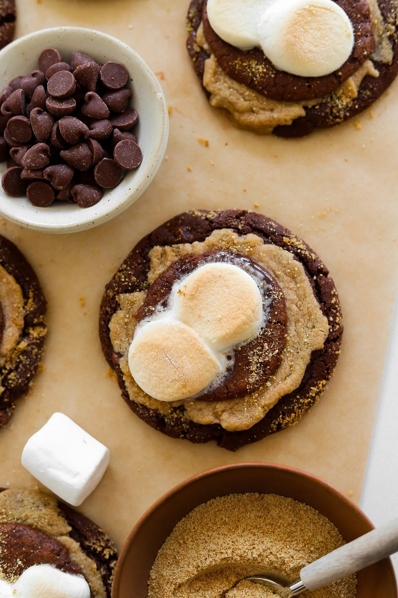

DESSERT
S'MORES BROWNIE COOKIES-CRUMBLE COPYCAT
PREP TIME: 1 HOUR
COOK TIME: 20 MINUTES
TOTAL TIME: 2 HOURS
YIELDS: 10 TO 11 COOKIES
If you love everything about s'mores and brownies, this Crumbl
copycat cookie recipe is going to blow your mind. It's got
layers of rich chocolate, crunchy graham crackers, gooey
marshmallows, and everything you could possibly crave in
a dessert. One bite and you’ll be obsessed—it's like your
favorite campfire treat got a serious upgrade!
JUMP TO RECIPE
DESSERT
S'MORES BROWNIE COOKIES-CRUMBL COPYCAT
If you love everything about s'mores and brownies, this Crumbl
copycat cookie recipe is going to blow your mind. It's got layers
of rich chocolate, crunchy graham cracker, gooey marshmallow,
and everything you could possibly crave in a dessert. One bite,
and you’ll be obsessed—it's like your favorite campfire treat got
a serious upgrade!
PRINT RECIPE
PIN RECIPE
PREP TIME: 1 HOUR
COOK TIME: 20 MINUTES
TOTAL TIME: 2 HOURS
YIELDS: 10 TO 11 COOKIES
INGREDIENTS
GRAHAM CRACKER COOKIE
1/2 cup + 2 tablespoons graham cracker crumbs
1/2 cup all-purpose flour
1/4 teaspoon salt
1/2 cup unsalted butter, room temperature
1/3 cup-light brown sugar
1 teaspoon vanilla extract
CHOCOLATE COOKIE
1/2 cup white granulated sugar
1/2 cup light brown sugar
1/2 cup unsalted butter, room temp
1 large egg + 1 yolk
1 teaspoon pure vanilla extract
1 teaspoon pure vanilla extract
2 teaspoons cornstarch
1/2 cup unsweetened cocoa powder
1/2 teaspoon baking soda
1/2 teaspoon salt
1/2 cup semi-sweet chocolate chips
1/2 cup milk chocolate chips
BROWNIE TOPPING
1/2 cup semi-sweet chocolate chips
1/4 cup unsalted butter
2 tablespoons cocoa powder
1 large egg
1/3 cup light brown sugar
1/3 cup white sugar
pinch of salt
1/2 cup all-purpose flour
OTHER
10 to 12 marshmallows, cut in half
1/4 cup graham cracker crumbs
INSTRUCTIONS
MAKE THE CHOCOLATE COOKIE DOUGH:
- Cream together butter and both granulated and brown sugars
until smooth and creamy.
- Add an egg, an extra yolk, and vanilla extract, mixing
until fully incorporated.
- In a separate bowl, whisk together cocoa powder, flour,
cornstarch, baking soda, and salt.
- Gradually combine the dry ingredients with the wet
mixture until a dough forms.
- Fold in semi-sweet and milk chocolate chips,
then set the dough aside.
MAKE THE GRAHAM CRACKER COOKIE DOUGH:
- In a mixing bowl, add graham cracker crumbs, flour, salt,
butter, brown sugar, and vanilla extract.
- Beat together with a hand or stand mixer until light
and fluffy. Set the dough aside.
PREPARE THE BROWNIE LAYER:
- Melt the unsalted butter in the microwave.
- Add chocolate chips to the hot butter, let it sit for 5 to 10
minutes, and then mix together until completely smooth.
- Whisk in cocoa powder until completely smooth again.
- In another bowl, beat together an egg and both granulated and
brown sugar until completely smooth and lighter in color.
- Fold in the chocolate and creamed butter mixtures together
and add the flour and salt.
- Combine with a rubber spatula until you have a thick brownie
batter consistency.
- Cover and transfer in the fridge to chill for 1o to 15
minutes to thicken up a bit.
ASSEMBLE AND BAKE THE COOKIES:
- Preheat your oven to 350°F (175°C) and line a baking
sheet with parchment paper.
- Use a large cookie scoop to portion the chocolate cookie dough i
nto 10 to 11 pieces. Flatten each piece into a thinner disc.
- Add about 1 to 2 tablespoons of the graham cracker cookie dough
on top and flatten it.
- Place 1 to 2 tablespoons of the brownie base on top of the
graham cracker dough and press down to flatten slightly.
- Top each cookie with two marshmallow halves.
- Sprinkle graham cracker crumbs on top and the edges of
the cookies.
- Bake until the edges are set, but the centers remain slightly
soft, about 10 to 12 minutes.
- Remove from the oven and allow to rest for 10 minutes on the
tray. Then enjoy warm!